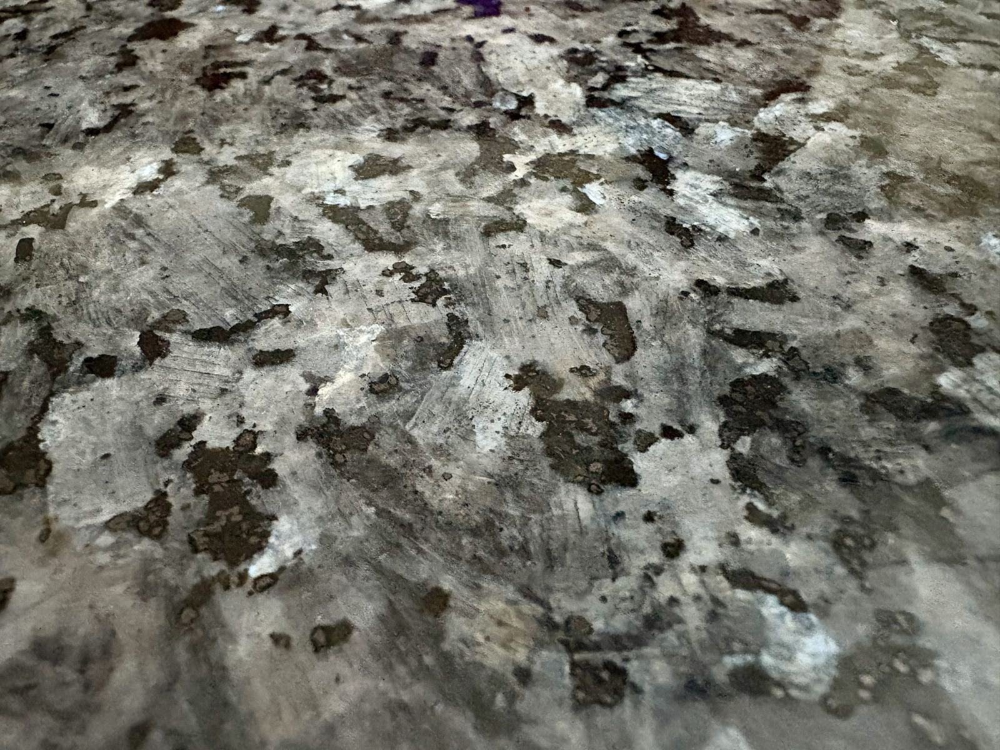
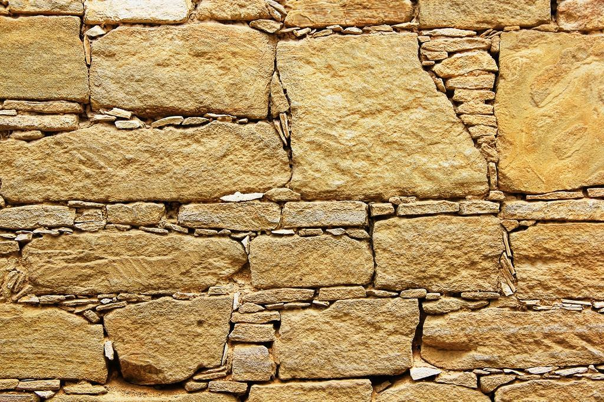
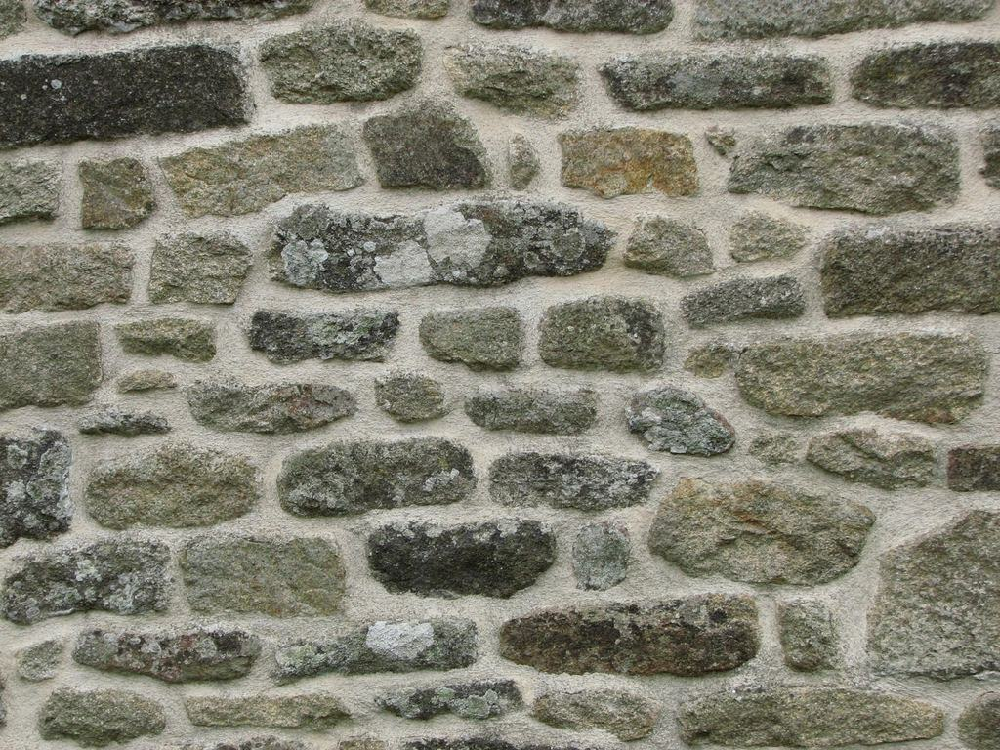

Tjänster
Vi är elva anställda, alla bosatta på ön. Hälften av uppdragen ligger innanför ringmuren, där vi samarbetar med byggnadsantikvarier om varje håltagning. Resten är villor, gårdar och sommarhus från Fårö till Burgsvik – ofta med frågor om vatten som är för hårt, för salt eller för lite.
Vad behöver ditt hus på ön?

Kulturhistoriska hus
Innanför ringmuren är husen byggnadsminnen eller ligger i ett världsarv, och varje ny rördragning kräver eftertanke. Vi föreslår vägar genom befintliga schakt, gamla skorstenspipor och bjälklag i stället för nya håltagningar i murverket.
Vi tar fram underlag till bygglov och samrådet med länsstyrelsen tillsammans med husägarens antikvarie.

Hårt vatten och kalk
Grundvattnet på Gotland har ofta en hårdhet över 20 tyska grader. Kalken sätter igen blandare, perlatorer och värmeväxlare, och en vanlig varmvattenberedare håller ibland bara hälften så länge som på fastlandet.
En avhärdare för villa kostar runt 16 500 kronor installerad.

Vatten när det är torrt
Nästan varje sommar inför regionen bevattningsförbud. Vi installerar regnvattentankar på 3 000–10 000 liter, kopplar takvatten till toalettspolning och mäter brunnens kapacitet innan du bygger ut huset.
En tank på 5 000 liter fylls av ungefär 40 millimeter regn på ett tak på 120 kvadratmeter.

Gästhem, hotell och restauranger
Öns besöksnäring har nio månader på sig att förbereda tre. Vi går igenom varmvatten, legionellarisk och avlopp i maj och har en extra bil i beredskap i innerstaden under Almedalsveckan.
Vi servar i dag 34 gästhem och pensionat på ön.
Så går ett jobb till på Gotland
- 1

Platsbesök
Ellinor eller en av rörmokarna tittar på huset och frågar efter ritningar, antikvarie och brunnsprotokoll.
- 2

Tillstånd
I innerstaden tar vi fram underlag till bygglov och samråd innan någon borrar ett enda hål.
- 3

Material på ön
Allt beställs i god tid och lagras hos oss, så att jobbet inte står still och väntar på färjan.
- 4

Utfört och dokumenterat
Du får foton på dolda rör och en ritning över dragningen till husets arkiv.
Behörigheter för ovanliga hus
- Säker VattenAuktoriserat företag – även i hus där vi måste ta ovanliga vägar med rören.
- ByggnadsvårdTre av oss har gått Hantverkslaboratoriets kurs i installationer i kulturhistoriska byggnader.
- InstallatörsföretagenMedlemmar sedan 1984 och följer konsumentbestämmelserna för installationsarbete.
- LegionellakontrollUtbildade i riskbedömning av tappvarmvatten i gästhem och hotell.